personalization/controlcenter-panel-matrix PASS
20261117T085925Z-personalization-controlcenter-panel-matrix-1 · attempt 1 · 126.925 s · class -
Reason: all proof checks passed
Instruction
Open Settings, then use Find a setting to visit every destination. Pause on each page so its first view can be reviewed as a consistent visual set.
Proof
| where | kind | note | detail | |
|---|---|---|---|---|
| ✅ | step 5 | probe | ok | |
| ✅ | step 12 | probe | ok | |
| ✅ | step 20 | probe | ok | |
| ✅ | step 28 | probe | ok | |
| ✅ | step 36 | probe | ok | |
| ✅ | step 44 | probe | ok | |
| ✅ | step 52 | probe | ok | |
| ✅ | step 60 | probe | ok | |
| ✅ | step 68 | probe | ok | |
| ✅ | step 76 | probe | ok | |
| ✅ | step 84 | probe | ok | |
| ✅ | step 92 | probe | ok | |
| ✅ | step 100 | probe | ok | |
| ✅ | step 108 | probe | ok | |
| ✅ | step 116 | probe | ok | |
| ✅ | step 124 | probe | ok | |
| ✅ | step 132 | probe | ok | |
| ✅ | step 140 | probe | ok | |
| ✅ | proof 0 | probe | ok | |
| ✅ | proof 1 | probe | rc=0 | |
| ✅ | proof 2 | screenshot | ["017-final.png"] |
Product and environment
| shell_sha | 74619fab04951777b2bdba37c1b80e1d19cb66bc |
|---|---|
| config_sha | 76058860dc3631250a6cd913ddbf1271c0eebf88 |
| horneroctl | horneroctl horneroctl-v0.2.0-preview45-9-g420c73c (420c73c) |
| horneroctl_sha256 | bea50d20f272e14fb1712b880c484c7dc65eb97381759b65f895e4808a700967 |
| engine | native |
| compositor | hyprland |
| hornero_qa | 0.1.0 |
| host_kernel | 7.3.4-arch1-2 |
| qemu | QEMU emulator version 11.1.3 |
| image | signal-s74619fa-c7605886-h420c73c.qcow2 |
| outputs | 1 |
| resolution | 1280x800 |
Screenshots

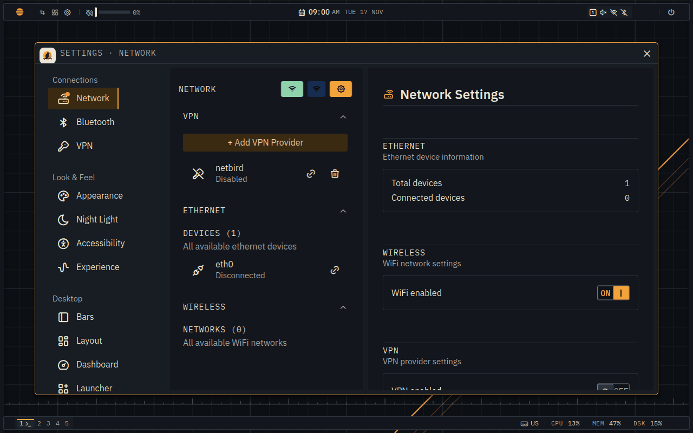

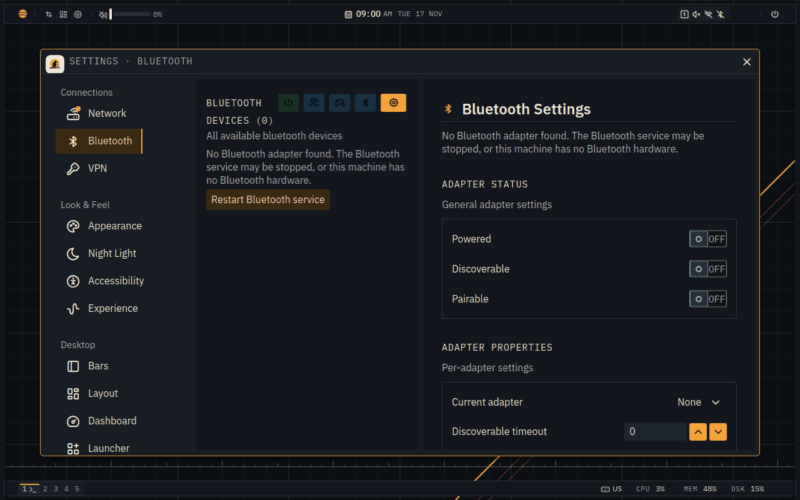

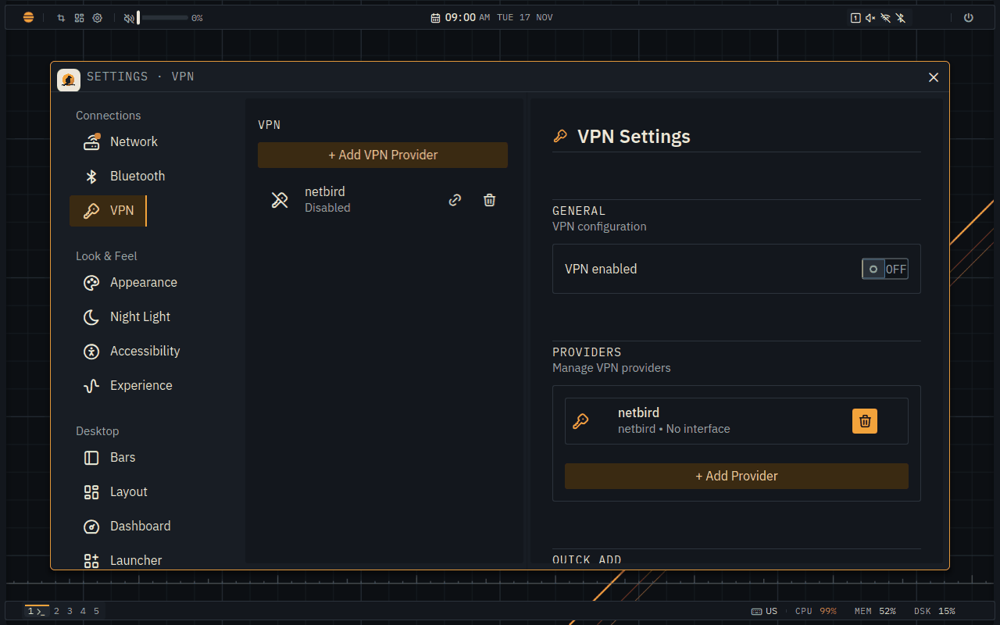

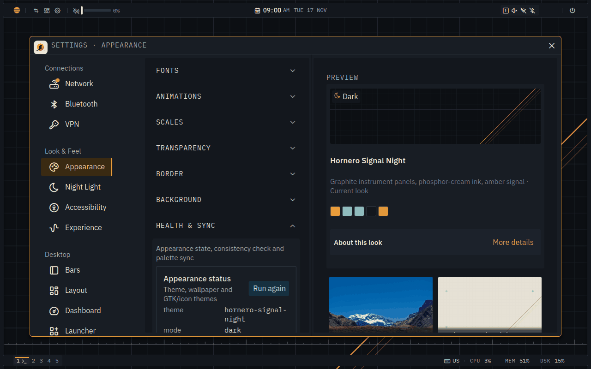

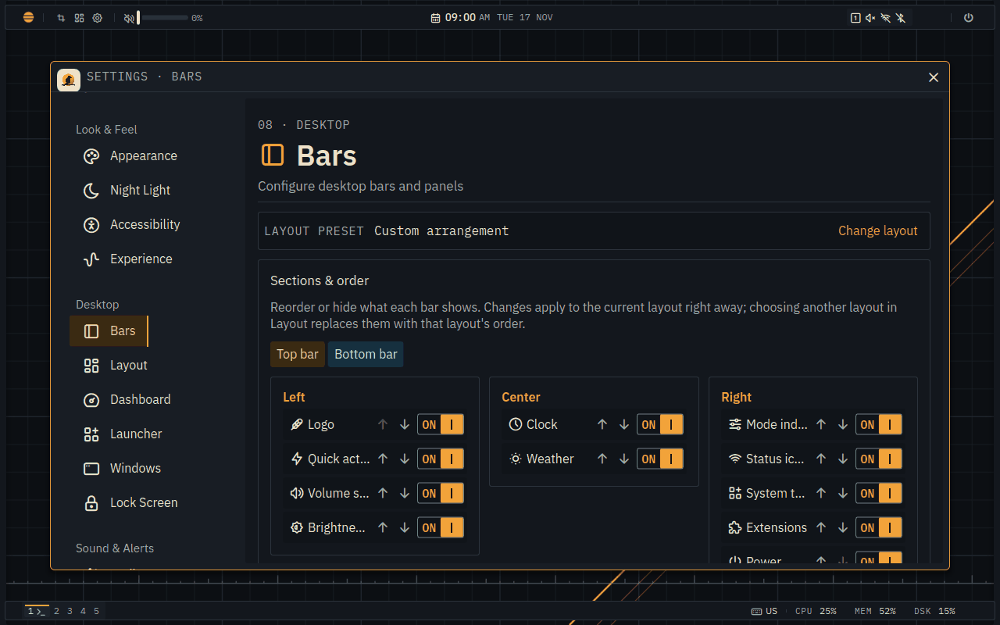

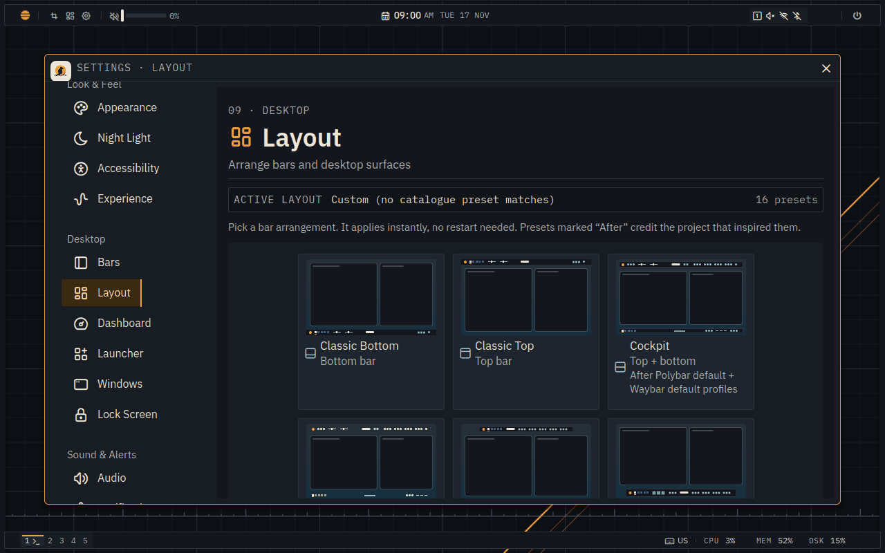

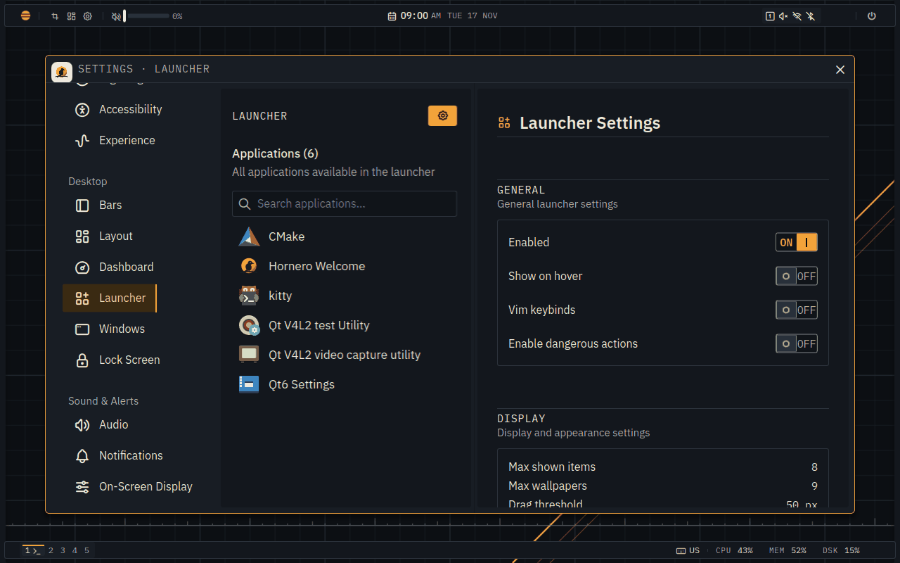

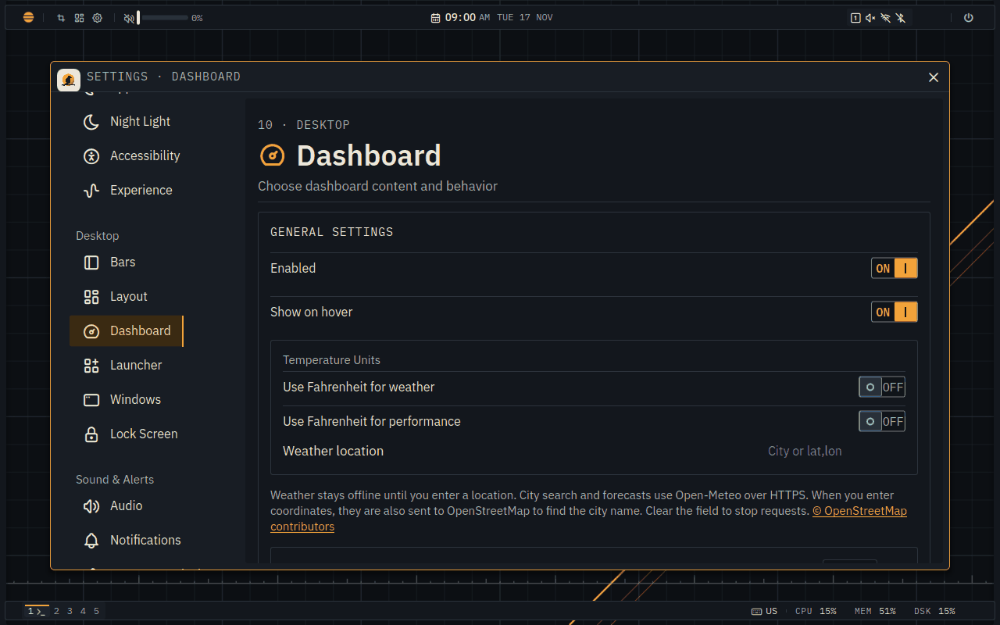

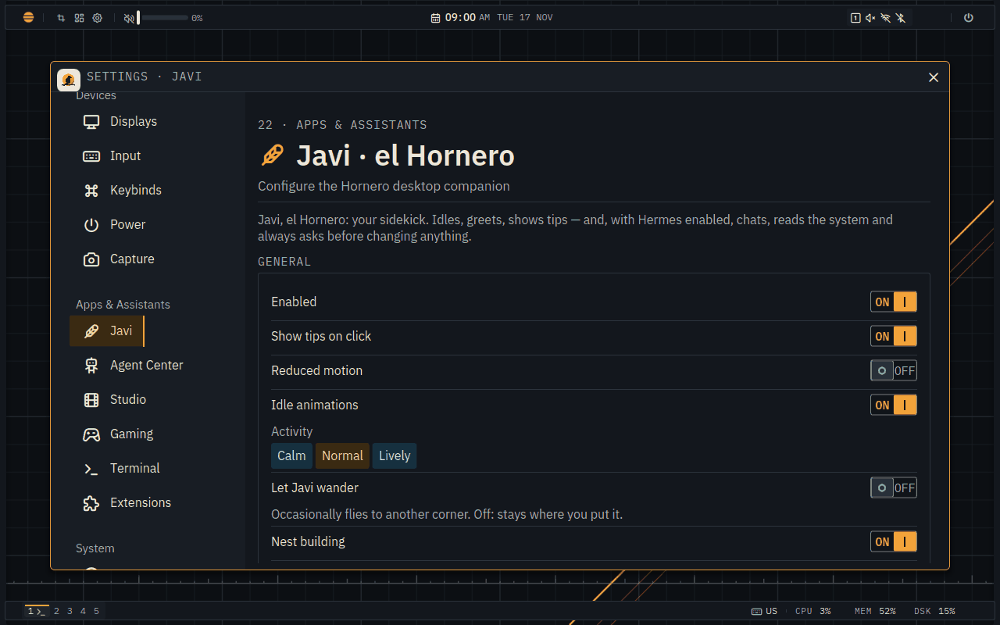

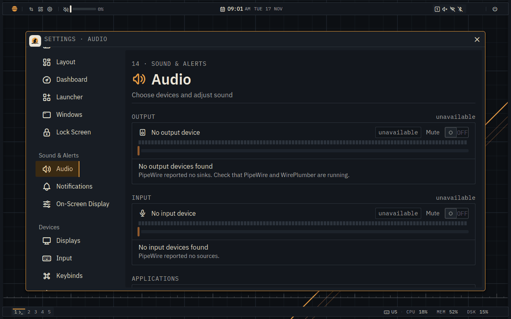

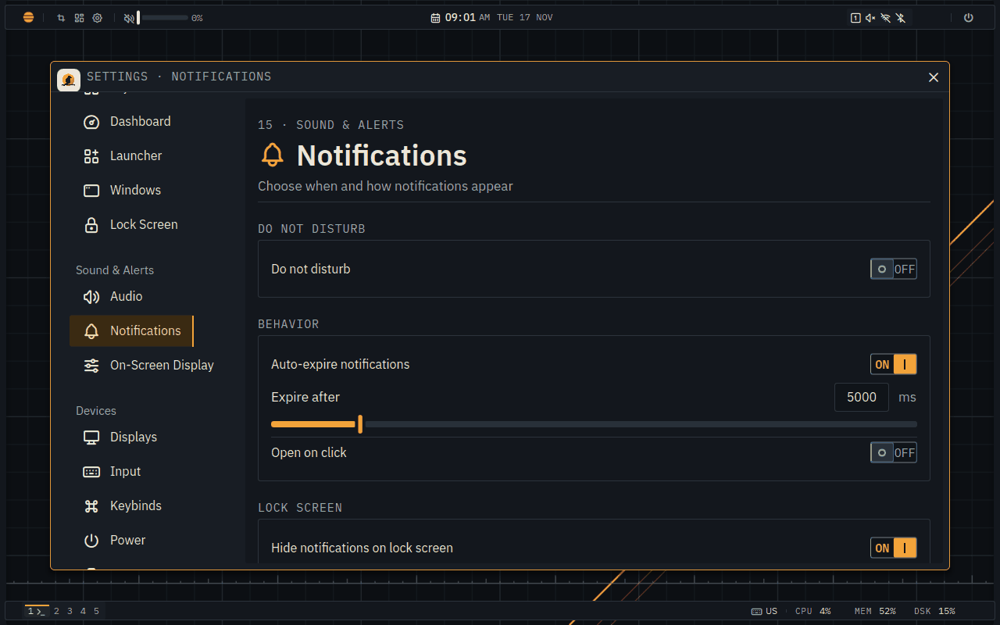

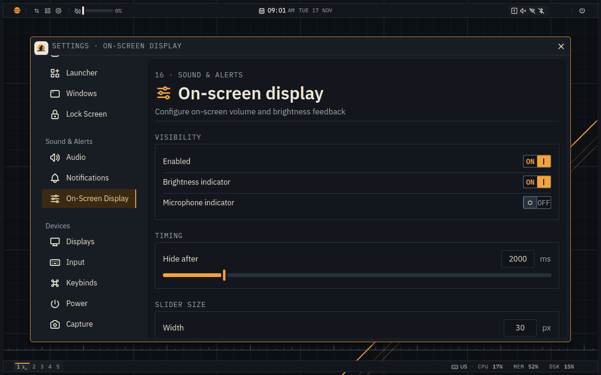

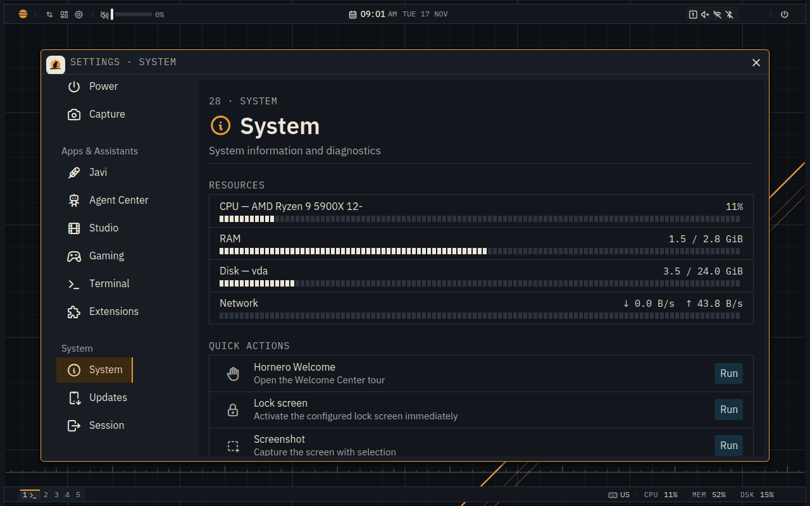

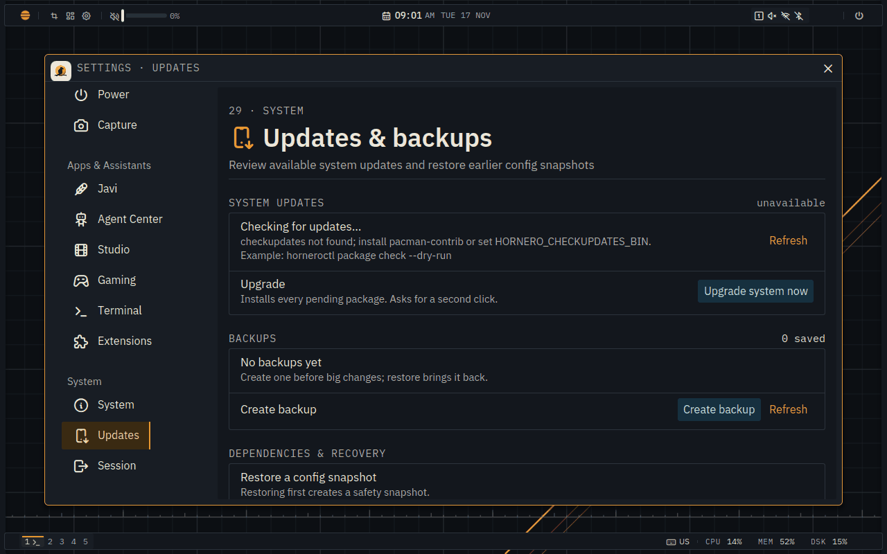

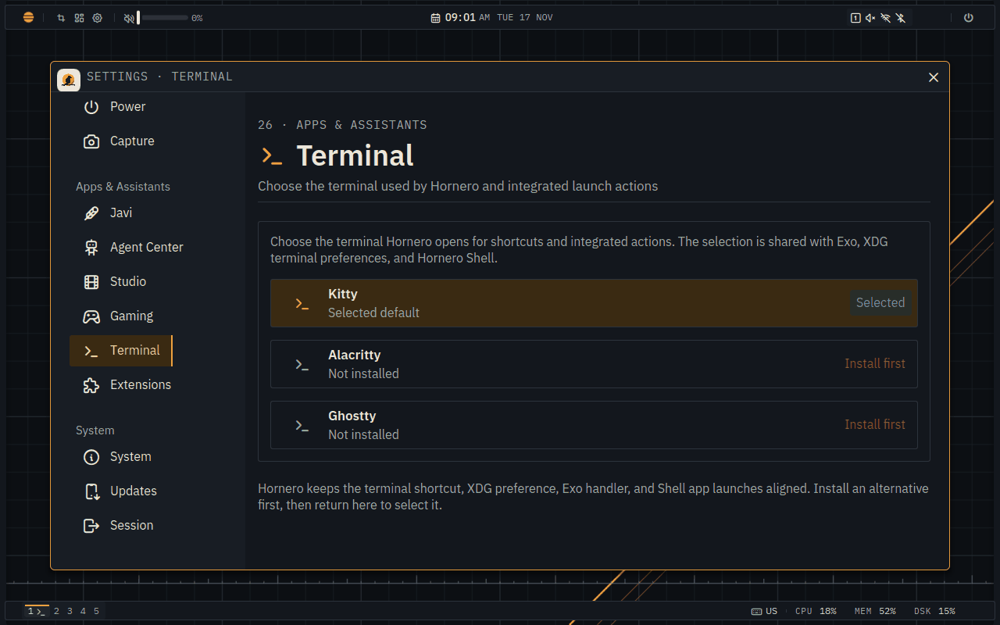

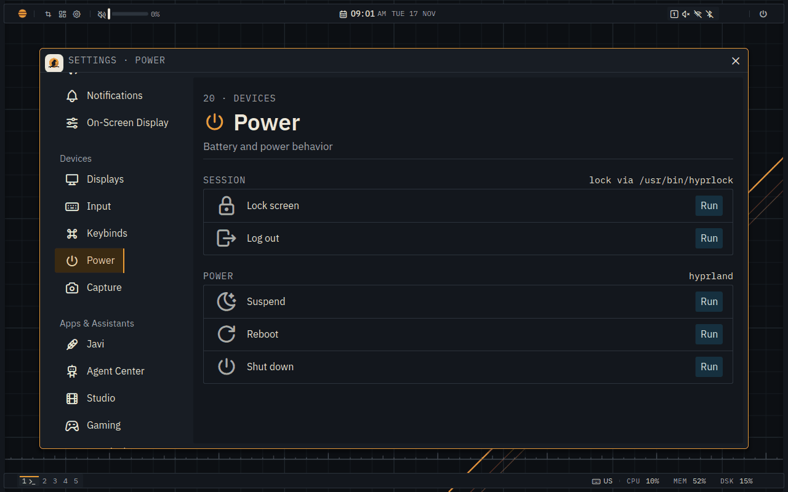


Actions
{"t": 15.381, "kind": "ready", "serial": []}
{"t": 36.132, "kind": "tokens", "theme": "hornero-signal-night", "roles": 34}
{"t": 36.132, "kind": "key", "step": 0, "value": "ctrl+space", "note": null}
{"t": 36.234, "kind": "wait", "step": 1, "value": {"changed": true, "stable": 0.4, "timeout": 8}, "note": null}
{"t": 44.415, "kind": "wait_result", "step": 1, "ok": false}
{"t": 44.415, "kind": "type", "step": 2, "value": ">Settings", "note": null}
{"t": 44.863, "kind": "wait", "step": 3, "value": {"stable": 0.4, "timeout": 8}, "note": null}
{"t": 52.931, "kind": "wait_result", "step": 3, "ok": false}
{"t": 52.931, "kind": "key", "step": 4, "value": "enter", "note": null}
{"t": 53.065, "kind": "probe", "step": 5, "value": {"run": "hyprctl activewindow -j | jq -r '.title // \"\"'", "contains": "Hornero Settings - ", "retry_s": 10}, "note": null}
{"t": 54.094, "kind": "key", "step": 6, "value": "ctrl+,", "note": null}
{"t": 54.201, "kind": "wait", "step": 7, "value": {"changed": true, "stable": 0.3, "timeout": 5}, "note": null}
{"t": 54.627, "kind": "wait_result", "step": 7, "ok": true}
{"t": 54.627, "kind": "type", "step": 8, "value": "Network", "note": null}
{"t": 54.961, "kind": "wait", "step": 9, "value": {"stable": 0.3, "timeout": 5}, "note": null}
{"t": 55.603, "kind": "wait_result", "step": 9, "ok": true}
{"t": 55.603, "kind": "key", "step": 10, "value": "enter", "note": null}
{"t": 55.736, "kind": "wait", "step": 11, "value": {"stable": 0.7, "timeout": 8}, "note": null}
{"t": 56.661, "kind": "wait_result", "step": 11, "ok": true}
{"t": 56.661, "kind": "probe", "step": 12, "value": {"run": "hyprctl activewindow -j | jq -r '.title // \"\"'", "equals": "Hornero Settings - Network", "retry_s": 8}, "note": null}
{"t": 56.906, "kind": "screenshot", "step": 13, "value": "controlcenter-network", "note": null}
{"t": 56.948, "kind": "key", "step": 14, "value": "ctrl+,", "note": null}
{"t": 57.084, "kind": "wait", "step": 15, "value": {"changed": true, "stable": 0.3, "timeout": 5}, "note": null}
{"t": 57.51, "kind": "wait_result", "step": 15, "ok": true}
{"t": 57.51, "kind": "type", "step": 16, "value": "Bluetooth", "note": null}
{"t": 57.937, "kind": "wait", "step": 17, "value": {"stable": 0.3, "timeout": 5}, "note": null}
{"t": 59.17, "kind": "wait_result", "step": 17, "ok": true}
{"t": 59.171, "kind": "key", "step": 18, "value": "enter", "note": null}
{"t": 59.303, "kind": "wait", "step": 19, "value": {"stable": 0.7, "timeout": 8}, "note": null}
{"t": 61.422, "kind": "wait_result", "step": 19, "ok": true}
{"t": 61.422, "kind": "probe", "step": 20, "value": {"run": "hyprctl activewindow -j | jq -r '.title // \"\"'", "equals": "Hornero Settings - Bluetooth", "retry_s": 8}, "note": null}
{"t": 61.671, "kind": "screenshot", "step": 21, "value": "controlcenter-bluetooth", "note": null}
{"t": 61.719, "kind": "key", "step": 22, "value": "ctrl+,", "note": null}
{"t": 61.854, "kind": "wait", "step": 23, "value": {"changed": true, "stable": 0.3, "timeout": 5}, "note": null}
{"t": 62.875, "kind": "wait_result", "step": 23, "ok": true}
{"t": 62.875, "kind": "type", "step": 24, "value": "VPN", "note": null}
{"t": 63.075, "kind": "wait", "step": 25, "value": {"stable": 0.3, "timeout": 5}, "note": null}
{"t": 63.721, "kind": "wait_result", "step": 25, "ok": true}
{"t": 63.721, "kind": "key", "step": 26, "value": "enter", "note": null}
{"t": 63.86, "kind": "wait", "step": 27, "value": {"stable": 0.7, "timeout": 8}, "note": null}
{"t": 65.412, "kind": "wait_result", "step": 27, "ok": true}
{"t": 65.412, "kind": "probe", "step": 28, "value": {"run": "hyprctl activewindow -j | jq -r '.title // \"\"'", "equals": "Hornero Settings - VPN", "retry_s": 8}, "note": null}
{"t": 65.758, "kind": "screenshot", "step": 29, "value": "controlcenter-vpn", "note": null}
{"t": 65.808, "kind": "key", "step": 30, "value": "ctrl+,", "note": null}
{"t": 65.946, "kind": "wait", "step": 31, "value": {"changed": true, "stable": 0.3, "timeout": 5}, "note": null}
{"t": 66.557, "kind": "wait_result", "step": 31, "ok": true}
{"t": 66.557, "kind": "type", "step": 32, "value": "Appearance", "note": null}
{"t": 67.042, "kind": "wait", "step": 33, "value": {"stable": 0.3, "timeout": 5}, "note": null}
{"t": 67.684, "kind": "wait_result", "step": 33, "ok": true}
{"t": 67.684, "kind": "key", "step": 34, "value": "enter", "note": null}
{"t": 67.822, "kind": "wait", "step": 35, "value": {"stable": 0.7, "timeout": 8}, "note": null}
{"t": 70.588, "kind": "wait_result", "step": 35, "ok": true}
{"t": 70.588, "kind": "probe", "step": 36, "value": {"run": "hyprctl activewindow -j | jq -r '.title // \"\"'", "equals": "Hornero Settings - Appearance", "retry_s": 8}, "note": null}
{"t": 70.842, "kind": "screenshot", "step": 37, "value": "controlcenter-appearance", "note": null}
{"t": 70.893, "kind": "key", "step": 38, "value": "ctrl+,", "note": null}
{"t": 71.048, "kind": "wait", "step": 39, "value": {"changed": true, "stable": 0.3, "timeout": 5}, "note": null}
{"t": 71.495, "kind": "wait_result", "step": 39, "ok": true}
{"t": 71.495, "kind": "type", "step": 40, "value": "Bars", "note": null}
{"t": 71.74, "kind": "wait", "step": 41, "value": {"stable": 0.3, "timeout": 5}, "note": null}
{"t": 72.098, "kind": "wait_result", "step": 41, "ok": true}
{"t": 72.098, "kind": "key", "step": 42, "value": "enter", "note": null}
{"t": 72.233, "kind": "wait", "step": 43, "value": {"stable": 0.7, "timeout": 8}, "note": null}
{"t": 73.772, "kind": "wait_result", "step": 43, "ok": true}
{"t": 73.772, "kind": "probe", "step": 44, "value": {"run": "hyprctl activewindow -j | jq -r '.title // \"\"'", "equals": "Hornero Settings - Bars", "retry_s": 8}, "note": null}
{"t": 74.027, "kind": "screenshot", "step": 45, "value": "controlcenter-bars", "note": null}
{"t": 74.069, "kind": "key", "step": 46, "value": "ctrl+,", "note": null}
{"t": 74.209, "kind": "wait", "step": 47, "value": {"changed": true, "stable": 0.3, "timeout": 5}, "note": null}
{"t": 74.644, "kind": "wait_result", "step": 47, "ok": true}
{"t": 74.644, "kind": "type", "step": 48, "value": "Layout", "note": null}
{"t": 74.964, "kind": "wait", "step": 49, "value": {"stable": 0.3, "timeout": 5}, "note": null}
{"t": 75.308, "kind": "wait_result", "step": 49, "ok": true}
{"t": 75.308, "kind": "key", "step": 50, "value": "enter", "note": null}
{"t": 75.437, "kind": "wait", "step": 51, "value": {"stable": 0.7, "timeout": 8}, "note": null}
{"t": 78.437, "kind": "wait_result", "step": 51, "ok": true}
{"t": 78.437, "kind": "probe", "step": 52, "value": {"run": "hyprctl activewindow -j | jq -r '.title // \"\"'", "equals": "Hornero Settings - Layout", "retry_s": 8}, "note": null}
{"t": 78.679, "kind": "screenshot", "step": 53, "value": "controlcenter-layout", "note": null}
{"t": 78.728, "kind": "key", "step": 54, "value": "ctrl+,", "note": null}
{"t": 78.865, "kind": "wait", "step": 55, "value": {"changed": true, "stable": 0.3, "timeout": 5}, "note": null}
{"t": 79.286, "kind": "wait_result", "step": 55, "ok": true}
{"t": 79.286, "kind": "type", "step": 56, "value": "Launcher", "note": null}
{"t": 79.695, "kind": "wait", "step": 57, "value": {"stable": 0.3, "timeout": 5}, "note": null}
{"t": 80.341, "kind": "wait_result", "step": 57, "ok": true}
{"t": 80.341, "kind": "key", "step": 58, "value": "enter", "note": null}
{"t": 80.477, "kind": "wait", "step": 59, "value": {"stable": 0.7, "timeout": 8}, "note": null}
{"t": 82.609, "kind": "wait_result", "step": 59, "ok": true}
{"t": 82.609, "kind": "probe", "step": 60, "value": {"run": "hyprctl activewindow -j | jq -r '.title // \"\"'", "equals": "Hornero Settings - Launcher", "retry_s": 8}, "note": null}
{"t": 82.851, "kind": "screenshot", "step": 61, "value": "controlcenter-launcher", "note": null}
{"t": 82.896, "kind": "key", "step": 62, "value": "ctrl+,", "note": null}
{"t": 83.034, "kind": "wait", "step": 63, "value": {"changed": true, "stable": 0.3, "timeout": 5}, "note": null}
{"t": 84.056, "kind": "wait_result", "step": 63, "ok": true}
{"t": 84.057, "kind": "type", "step": 64, "value": "Dashboard", "note": null}
{"t": 84.503, "kind": "wait", "step": 65, "value": {"stable": 0.3, "timeout": 5}, "note": null}
{"t": 87.872, "kind": "wait_result", "step": 65, "ok": true}
{"t": 87.872, "kind": "key", "step": 66, "value": "enter", "note": null}
{"t": 87.974, "kind": "wait", "step": 67, "value": {"stable": 0.7, "timeout": 8}, "note": null}
{"t": 89.206, "kind": "wait_result", "step": 67, "ok": true}
{"t": 89.206, "kind": "probe", "step": 68, "value": {"run": "hyprctl activewindow -j | jq -r '.title // \"\"'", "equals": "Hornero Settings - Dashboard", "retry_s": 8}, "note": null}
{"t": 89.451, "kind": "screenshot", "step": 69, "value": "controlcenter-dashboard", "note": null}
{"t": 89.496, "kind": "key", "step": 70, "value": "ctrl+,", "note": null}
{"t": 89.634, "kind": "wait", "step": 71, "value": {"changed": true, "stable": 0.3, "timeout": 5}, "note": null}
{"t": 90.058, "kind": "wait_result", "step": 71, "ok": true}
{"t": 90.058, "kind": "type", "step": 72, "value": "Javi", "note": null}
{"t": 90.297, "kind": "wait", "step": 73, "value": {"stable": 0.3, "timeout": 5}, "note": null}
{"t": 90.641, "kind": "wait_result", "step": 73, "ok": true}
{"t": 90.641, "kind": "key", "step": 74, "value": "enter", "note": null}
{"t": 90.772, "kind": "wait", "step": 75, "value": {"stable": 0.7, "timeout": 8}, "note": null}
{"t": 91.995, "kind": "wait_result", "step": 75, "ok": true}
{"t": 91.995, "kind": "probe", "step": 76, "value": {"run": "hyprctl activewindow -j | jq -r '.title // \"\"'", "equals": "Hornero Settings - Javi", "retry_s": 8}, "note": null}
{"t": 92.234, "kind": "screenshot", "step": 77, "value": "controlcenter-javi", "note": null}
{"t": 92.276, "kind": "key", "step": 78, "value": "ctrl+,", "note": null}
{"t": 92.415, "kind": "wait", "step": 79, "value": {"changed": true, "stable": 0.3, "timeout": 5}, "note": null}
{"t": 92.841, "kind": "wait_result", "step": 79, "ok": true}
{"t": 92.841, "kind": "type", "step": 80, "value": "Audio", "note": null}
{"t": 93.123, "kind": "wait", "step": 81, "value": {"stable": 0.3, "timeout": 5}, "note": null}
{"t": 93.765, "kind": "wait_result", "step": 81, "ok": true}
{"t": 93.765, "kind": "key", "step": 82, "value": "enter", "note": null}
{"t": 93.897, "kind": "wait", "step": 83, "value": {"stable": 0.7, "timeout": 8}, "note": null}
{"t": 95.129, "kind": "wait_result", "step": 83, "ok": true}
{"t": 95.129, "kind": "probe", "step": 84, "value": {"run": "hyprctl activewindow -j | jq -r '.title // \"\"'", "equals": "Hornero Settings - Audio", "retry_s": 8}, "note": null}
{"t": 95.379, "kind": "screenshot", "step": 85, "value": "controlcenter-audio", "note": null}
{"t": 95.423, "kind": "key", "step": 86, "value": "ctrl+,", "note": null}
{"t": 95.561, "kind": "wait", "step": 87, "value": {"changed": true, "stable": 0.3, "timeout": 5}, "note": null}
{"t": 96.578, "kind": "wait_result", "step": 87, "ok": true}
{"t": 96.578, "kind": "type", "step": 88, "value": "Notifications", "note": null}
{"t": 97.192, "kind": "wait", "step": 89, "value": {"stable": 0.3, "timeout": 5}, "note": null}
{"t": 97.541, "kind": "wait_result", "step": 89, "ok": true}
{"t": 97.541, "kind": "key", "step": 90, "value": "enter", "note": null}
{"t": 97.67, "kind": "wait", "step": 91, "value": {"stable": 0.7, "timeout": 8}, "note": null}
{"t": 99.781, "kind": "wait_result", "step": 91, "ok": true}
{"t": 99.781, "kind": "probe", "step": 92, "value": {"run": "hyprctl activewindow -j | jq -r '.title // \"\"'", "equals": "Hornero Settings - Notifications", "retry_s": 8}, "note": null}
{"t": 100.029, "kind": "screenshot", "step": 93, "value": "controlcenter-notifications", "note": null}
{"t": 100.071, "kind": "key", "step": 94, "value": "ctrl+,", "note": null}
{"t": 100.213, "kind": "wait", "step": 95, "value": {"changed": true, "stable": 0.3, "timeout": 5}, "note": null}
{"t": 100.634, "kind": "wait_result", "step": 95, "ok": true}
{"t": 100.634, "kind": "type", "step": 96, "value": "On-screen display", "note": null}
{"t": 101.417, "kind": "wait", "step": 97, "value": {"stable": 0.3, "timeout": 5}, "note": null}
{"t": 102.354, "kind": "wait_result", "step": 97, "ok": true}
{"t": 102.354, "kind": "key", "step": 98, "value": "enter", "note": null}
{"t": 102.491, "kind": "wait", "step": 99, "value": {"stable": 0.7, "timeout": 8}, "note": null}
{"t": 103.74, "kind": "wait_result", "step": 99, "ok": true}
{"t": 103.74, "kind": "probe", "step": 100, "value": {"run": "hyprctl activewindow -j | jq -r '.title // \"\"'", "equals": "Hornero Settings - On-screen display", "retry_s": 8}, "note": null}
{"t": 103.98, "kind": "screenshot", "step": 101, "value": "controlcenter-osd", "note": null}
{"t": 104.024, "kind": "key", "step": 102, "value": "ctrl+,", "note": null}
{"t": 104.158, "kind": "wait", "step": 103, "value": {"changed": true, "stable": 0.3, "timeout": 5}, "note": null}
{"t": 104.587, "kind": "wait_result", "step": 103, "ok": true}
{"t": 104.588, "kind": "type", "step": 104, "value": "System", "note": null}
{"t": 104.905, "kind": "wait", "step": 105, "value": {"stable": 0.3, "timeout": 5}, "note": null}
{"t": 106.444, "kind": "wait_result", "step": 105, "ok": true}
{"t": 106.444, "kind": "key", "step": 106, "value": "enter", "note": null}
{"t": 106.576, "kind": "wait", "step": 107, "value": {"stable": 0.7, "timeout": 8}, "note": null}
{"t": 112.573, "kind": "wait_result", "step": 107, "ok": true}
{"t": 112.574, "kind": "probe", "step": 108, "value": {"run": "hyprctl activewindow -j | jq -r '.title // \"\"'", "equals": "Hornero Settings - System", "retry_s": 8}, "note": null}
{"t": 112.83, "kind": "screenshot", "step": 109, "value": "controlcenter-system", "note": null}
{"t": 112.872, "kind": "key", "step": 110, "value": "ctrl+,", "note": null}
{"t": 113.012, "kind": "wait", "step": 111, "value": {"changed": true, "stable": 0.3, "timeout": 5}, "note": null}
{"t": 114.33, "kind": "wait_result", "step": 111, "ok": true}
{"t": 114.33, "kind": "type", "step": 112, "value": "Updates", "note": null}
{"t": 114.697, "kind": "wait", "step": 113, "value": {"stable": 0.3, "timeout": 5}, "note": null}
{"t": 115.046, "kind": "wait_result", "step": 113, "ok": true}
{"t": 115.046, "kind": "key", "step": 114, "value": "enter", "note": null}
{"t": 115.172, "kind": "wait", "step": 115, "value": {"stable": 0.7, "timeout": 8}, "note": null}
{"t": 116.412, "kind": "wait_result", "step": 115, "ok": true}
{"t": 116.412, "kind": "probe", "step": 116, "value": {"run": "hyprctl activewindow -j | jq -r '.title // \"\"'", "equals": "Hornero Settings - Updates", "retry_s": 8}, "note": null}
{"t": 116.664, "kind": "screenshot", "step": 117, "value": "controlcenter-updates", "note": null}
{"t": 116.71, "kind": "key", "step": 118, "value": "ctrl+,", "note": null}
{"t": 116.847, "kind": "wait", "step": 119, "value": {"changed": true, "stable": 0.3, "timeout": 5}, "note": null}
{"t": 117.27, "kind": "wait_result", "step": 119, "ok": true}
{"t": 117.27, "kind": "type", "step": 120, "value": "Terminal", "note": null}
{"t": 117.678, "kind": "wait", "step": 121, "value": {"stable": 0.3, "timeout": 5}, "note": null}
{"t": 118.029, "kind": "wait_result", "step": 121, "ok": true}
{"t": 118.029, "kind": "key", "step": 122, "value": "enter", "note": null}
{"t": 118.155, "kind": "wait", "step": 123, "value": {"stable": 0.7, "timeout": 8}, "note": null}
{"t": 119.386, "kind": "wait_result", "step": 123, "ok": true}
{"t": 119.386, "kind": "probe", "step": 124, "value": {"run": "hyprctl activewindow -j | jq -r '.title // \"\"'", "equals": "Hornero Settings - Terminal", "retry_s": 8}, "note": null}
{"t": 119.632, "kind": "screenshot", "step": 125, "value": "controlcenter-terminal", "note": null}
{"t": 119.68, "kind": "key", "step": 126, "value": "ctrl+,", "note": null}
{"t": 119.816, "kind": "wait", "step": 127, "value": {"changed": true, "stable": 0.3, "timeout": 5}, "note": null}
{"t": 120.241, "kind": "wait_result", "step": 127, "ok": true}
{"t": 120.241, "kind": "type", "step": 128, "value": "Power", "note": null}
{"t": 120.537, "kind": "wait", "step": 129, "value": {"stable": 0.3, "timeout": 5}, "note": null}
{"t": 120.906, "kind": "wait_result", "step": 129, "ok": true}
{"t": 120.906, "kind": "key", "step": 130, "value": "enter", "note": null}
{"t": 121.01, "kind": "wait", "step": 131, "value": {"stable": 0.7, "timeout": 8}, "note": null}
{"t": 122.249, "kind": "wait_result", "step": 131, "ok": true}
{"t": 122.249, "kind": "probe", "step": 132, "value": {"run": "hyprctl activewindow -j | jq -r '.title // \"\"'", "equals": "Hornero Settings - Power", "retry_s": 8}, "note": null}
{"t": 122.505, "kind": "screenshot", "step": 133, "value": "controlcenter-power", "note": null}
{"t": 122.548, "kind": "key", "step": 134, "value": "ctrl+,", "note": null}
{"t": 122.647, "kind": "wait", "step": 135, "value": {"changed": true, "stable": 0.3, "timeout": 5}, "note": null}
{"t": 123.07, "kind": "wait_result", "step": 135, "ok": true}
{"t": 123.07, "kind": "type", "step": 136, "value": "Network", "note": null}
{"t": 123.436, "kind": "wait", "step": 137, "value": {"stable": 0.3, "timeout": 5}, "note": null}
{"t": 124.082, "kind": "wait_result", "step": 137, "ok": true}
{"t": 124.082, "kind": "key", "step": 138, "value": "enter", "note": null}
{"t": 124.216, "kind": "wait", "step": 139, "value": {"stable": 0.7, "timeout": 8}, "note": null}
{"t": 125.756, "kind": "wait_result", "step": 139, "ok": true}
{"t": 125.756, "kind": "probe", "step": 140, "value": {"run": "hyprctl activewindow -j | jq -r '.title // \"\"'", "equals": "Hornero Settings - Network", "retry_s": 8}, "note": null}
Logs: logs/ · machine-readable: run.json, result.json, assertions.json, actions.jsonl